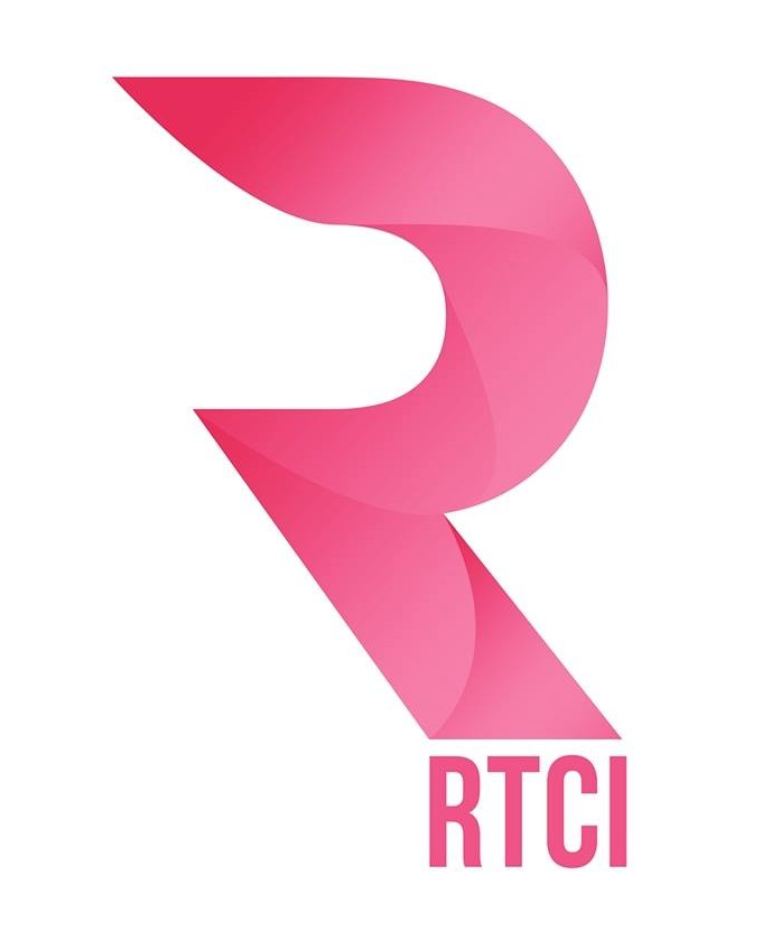
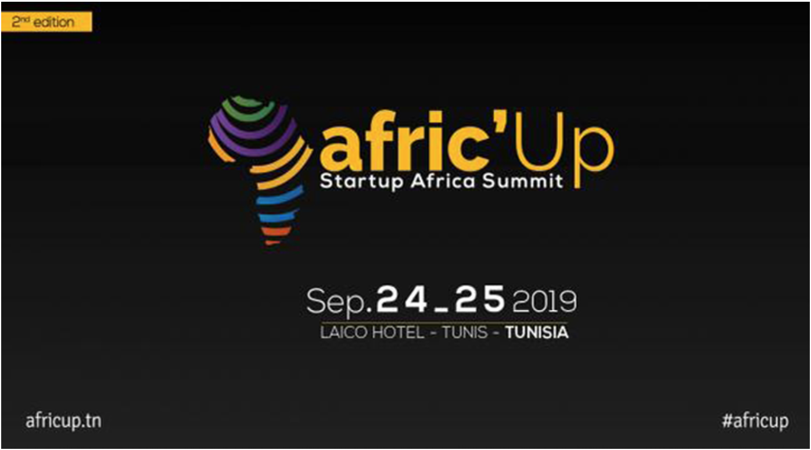
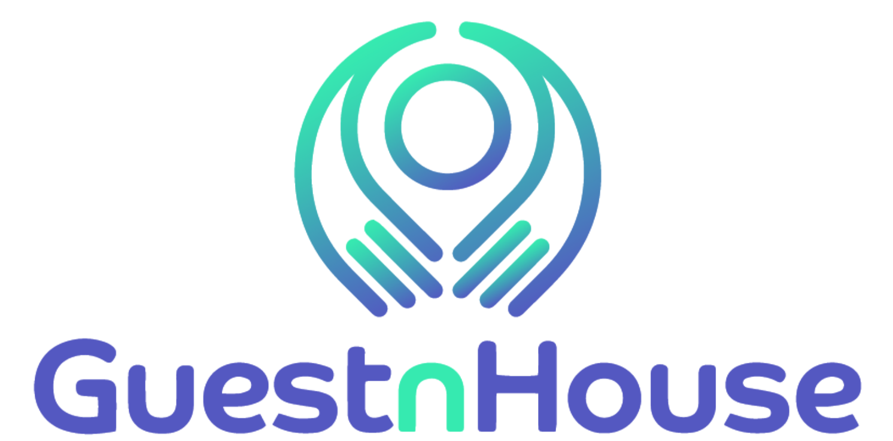

Tech IT Easy @ RTCI
For the English segment @rtci, I am hosting a 30min talk show 'Podcast' on technology. Trying to give a new spin on how tech is mediatized in Tunisia. On Tech IT Easy, we bring back, sleek talking, we bring Tunisian guests to talk about their achievements, how they surpassed the difficulties and how they never surrendered to failure.

Community Engagement Manager @ RTCI
With the use of social media, trying to target a new type of audience for the national radio, and intertwining 21st century marketing methods, to bring the radio to the visual world, and gain a demographic that likes to see, rather then just hear, basically bringing the National Radio to the 21st Century.

Afric'Up coverage with Africa News Agency
On the 24th and 25th of September 2019, I worked with ANA on covering the event, with interviews, of people from all over the continent of Africa.
https://www.africanewsagency.fr/africa-tech-la-tunisie-sera-t-elle-le-laboratoire-continental- de-lintelligence-artificielle/
https://www.africanewsagency.fr/portrait-ali-safraoui-kawalis-catalyser- linnovation-made-in-africa/
https://www.africanewsagency.fr/parcours-farida-akadiri-faire-de-lafrique-un- continent-de-champions/

Communications Manager @BNPSquare "GuestnHouse"
Working on the Business Plan
Communication Strategy
Communication e-mails
Brand Identity- Marketing strategy
Working hand in hand with the online marketing strategy team